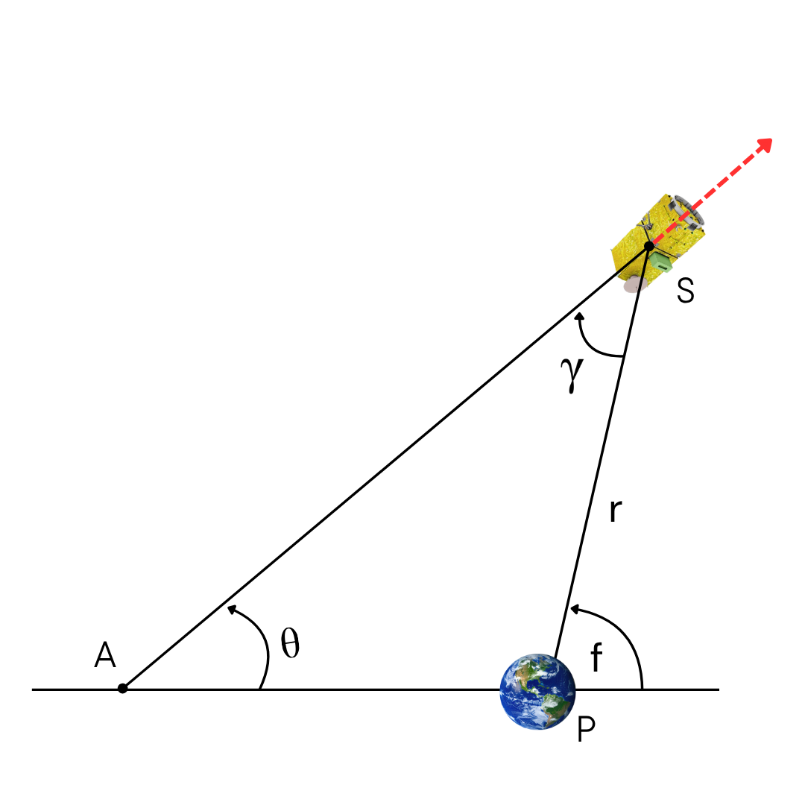
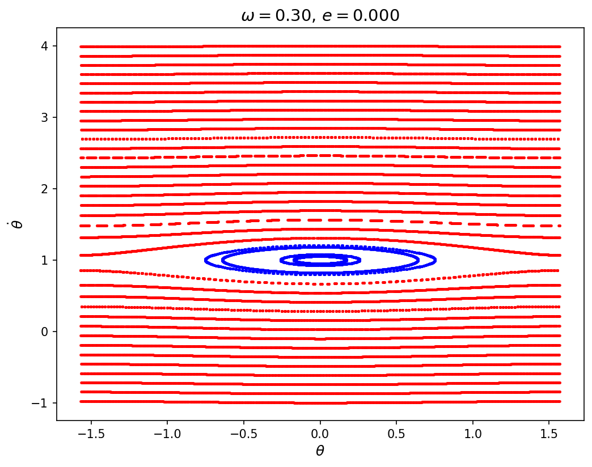
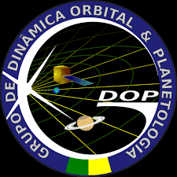
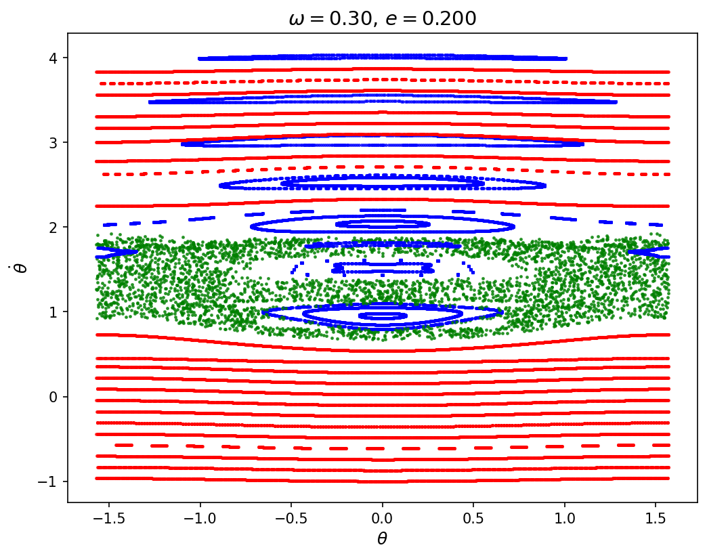

Welcome to PoincAIré's Documentation!
PoincAIré is an ensemble of open-source machine learning models designed to investigate the spin-orbit dynamics of an elongated satellite under the gravitational attraction of a central spherical body, where the shape of the satellite is characterized by the asymmetry parameter $\omega = \sqrt{3(B-A)/C}$ (with $A < B < C$ representing the principal moments of inertia).
Through the Poincaré Surface of Section (PSS) technique, researchers can explore the spin-orbit phase space of the satellite across different initial orbital conditions and body shapes. However, manual visual classification of these sections across extensive parameter spaces is traditionally time-consuming and computationally expensive.
PoincAIré bridges this gap by employing machine learning to automatically classify PSS structures and predict dynamical states directly from initial conditions.
Application on Artificial Satellite
Artificial satellites are generally in a state of synchronous rotation, meaning that they rotate at the same rate as they orbit the Earth, thereby continuously keeping the same face oriented toward the Earth. Consider an elongated satellite in an eccentric orbit ($e$) around a spherical body, with semi-major axis and mean motion normalized to 1 ($T = 2\pi$). Let $f$ be the true anomaly, $r$ be the radial distance, and $\gamma$ be the orientation of the satellite's longest principal axis relative to $r$. The equation of motion for the angular orientation $\theta$ of the satellite relative to a reference line in space (see Fig. 1) is expressed by:
Figure 2 shows a mosaic of a PSS map in the $(\theta, \dot{\theta})$ phase space for a satellite with $\omega = 1.34$ and different eccentricities. The colors represent the different spin-orbit resonances, and the type of resonance is indicated in the figure.


Key Features & Model Pipeline
Our pipeline uses two different machine learning models, each tailored for a specific task:
-
1. Image Classification via Convolutional Neural Network (CNN)
- Purpose: A classification model based on Convolutional Neural Networks (CNN) and Vision Transformer (ViT) architectures are trained to automatically identify three distinct dynamical regimes directly from PSS images: Resonance, Circulation, and Chaos.
- Performance: Achieved 98.6% accuracy. Note that performance may decrease on low-resolution Poincaré maps sampled with fewer than 500 points.
-
2. Dynamical Regime Prediction via XGBoost
- Purpose: This model receives the system's initial condition parameters as input and predicts the probability of the trajectory belonging to each dynamical class, speeding up parameter sweeps and enabling high-resolution stability mapping.
- Performance: Achieved ~97% accuracy. Beyond predicting class probabilities, combining these predictions with normalized entropy allows users to identify and analyze low-confidence classification regions.
The animation on the left shows several PSS maps classified by the image classification model, whereas the animation on the right presents multiple dynamical maps in the (e, thetadot) phase space generated for different parameter values predicted by the XGBoost models. The color of each class in animations are:
- Blue: Resonant class
- Red: Circulation class
- Green: Chaos class

Fig 3: PSS maps classified by image classification model

Fig 4: Evolution of the dynamical structure across varying asymmetry parameter.
Research Team

We are part of the Grupo de Dinâmica Orbital e Planetologia (GDOP) at São Paulo State University (UNESP).
- Othon C. Winter
- Tiago F. L. L. Pinheiro
- Giovana Ramon
- Lucas S. Pereira
Published Papers
Winter, O. C.; Pinheiro, T. F. L. L.; Ramon, G.; Pereira, L. S.; Callegari, N.
On the spin-orbit phase-space of an artificial satellite.
European Physical Journal -- Special Topics, 2025.
DOI: 10.1140/epjs/s11734-025-01868-6
Ramon, G.; Pinheiro, T. F. L. L.; Pereira, L. S.; Winter, O. C.
PoincAIré: Classification Learning of Spin-Orbit Dynamical Structures via Poincaré Surface of Section.
Nonlinear Dynamics (Submitted)
Installation & Models
To run the examples and use the classification models, please download the machine learning models from the GitHub repository:
git@github.com:Lealpinheiro/PoincAIre.git
Clone Repository
git clone git@github.com:Lealpinheiro/PoincAIre.git
cd PoincAIreCode Examples
Select an example from the side menu.
Example 1: Generating the Dynamical Map
This script generates the parameter grid and predicts the dynamical regime associated with each initial condition.
Python packages & ML model
# Packages
import numpy as np
import matplotlib.pyplot as plt
import joblib
from matplotlib.colors import ListedColormap, BoundaryNorm
# Load the trained XGBoost model
model = joblib.load("xgboost_model.pkl")Parameter Configuration
# Settings
omega = 1.34 # Asymmetry parameter
theta = 0. # Angular orientation
ecc_vals = np.linspace(0., 0.2, 300) # Eccentricity range
thetadot_vals = np.linspace(-1., 4., 300) # Angular velocity range
E, T = np.meshgrid(ecc_vals, thetadot_vals) # Parameter grid
cmap_regimes = ListedColormap(["blue", "red", "green"]) # Colormap for the dynamical regimes
norm = BoundaryNorm([-0.5, 0.5, 1.5, 2.5], cmap_regimes.N) # Define boundaries for the discrete dynamical regimes
class_names = ["resonant", "circulation", "chaos"] # Class labels
cbar_kwargs = {"orientation": "horizontal", "pad": 0.15, "aspect": 40} # Colorbar layout
save_kwargs = {"dpi": 300, "bbox_inches": "tight"} # Figure export settingsGenerate the dynamical maps
grid = np.c_[E.ravel(), T.ravel(), np.full(E.size, omega), np.full(E.size, theta)]
# Predict the probability of belonging to each dynamical class
probs = model.predict_proba(grid)
pred_class = np.argmax(probs, axis=1).reshape(E.shape)
# Plot
plt.figure(figsize=(6,5))
img = plt.pcolormesh(T, E, pred_class, cmap=cmap_regimes, norm=norm, shading="auto")
plt.xlabel(r"$\dot{\theta}$", fontsize=16)
plt.ylabel("e", fontsize=16)
# Set the colorbar
cbar = plt.colorbar(img, **cbar_kwargs)
cbar.set_ticks([0, 1, 2])
cbar.set_ticklabels(class_names)
cbar.set_label("Dynamical regime", fontsize=14)
plt.tight_layout()
plt.savefig(f"diagram_{omega}.png", **save_kwargs)
plt.close()

Example 2: Generating the Entropy Map
This example demonstrates how to quantify classification uncertainty using normalized Shannon entropy.
Python packages & ML model
# Packages
import numpy as np
import matplotlib.pyplot as plt
import joblib
# Load the trained XGBoost model
model = joblib.load("xgboost_model.pkl")Parameter Configuration
# Domain settings
omega = 1.34 # Asymmetry parameter (e.g., 0.8 or 1.34)
theta = 0. # Angular orientation
ecc_vals = np.linspace(0., 0.2, 300) # Eccentricity range
thetadot_vals = np.linspace(-1., 4., 300) # Angular velocity range
E, T = np.meshgrid(ecc_vals, thetadot_vals) # Parameter grid
grid = np.c_[E.ravel(), T.ravel(), np.full(E.size, omega), np.full(E.size, theta)]
# Predict the probability of belonging to each dynamical class
probs = model.predict_proba(grid)
# Calculate normalized Shannon Entropy for a 3-class system
eps = 1e-12 # Threshold to avoid log(0) error
entropy = -np.sum(probs * np.log(probs + eps), axis=1) # Entropy sum
max_entropy = np.log(3)
entropy_normalized = entropy / max_entropy
entropy_map = entropy_normalized.reshape(E.shape)
cbar_kwargs = {"orientation": "horizontal", "pad": 0.15, "aspect": 40}
save_kwargs = {"dpi": 300, "bbox_inches": "tight"}Generate the Entropy maps
grid = np.c_[E.ravel(), T.ravel(), np.full(E.size, omega), np.full(E.size, theta)]
# Predict the probability of belonging to each dynamical class
probs = model.predict_proba(grid)
pred_class = np.argmax(probs, axis=1).reshape(E.shape)
# Plot
plt.figure(figsize=(6, 5))
img = plt.pcolormesh(T, E, entropy_map, shading="auto", cmap="inferno", vmin=0, vmax=1)
# Set the colorbar
cbar = plt.colorbar(img, **cbar_kwargs)
cbar.set_label("Entropy", fontsize=14)
plt.xlabel(r"$\dot{\theta}$", fontsize=16)
plt.ylabel("e", fontsize=16)
plt.tight_layout()
plt.savefig(f"uncertainty_{omega}.png", **save_kwargs)
plt.close()

Example 3: Generating Probability Maps
This script computes the prediction probabilities for each class across parameter space.
Python packages & ML model
# Packages
import numpy as np
import matplotlib.pyplot as plt
import joblib
# Load the trained XGBoost model
model = joblib.load("xgboost_model.pkl")Parameter Configuration
# Domain settings
omega = 1.34 # Asymmetry parameter (e.g., 0.8 or 1.34)
theta = 0. # Angular orientation
ecc_vals = np.linspace(0., 0.2, 300) # Eccentricity range
thetadot_vals = np.linspace(-1., 4., 300) # Angular velocity range
E, T = np.meshgrid(ecc_vals, thetadot_vals) # Parameter grid
grid = np.c_[E.ravel(), T.ravel(), np.full(E.size, omega), np.full(E.size, theta)]
# Probabilities for each dynamical class
probs = model.predict_proba(grid)
P_res = probs[:, 0].reshape(E.shape) # Resonant class
P_circ = probs[:, 1].reshape(E.shape) # Circulation class
P_chaos = probs[:, 2].reshape(E.shape) # Chaos classGenerate the Probability maps
# Plot
fig, axes = plt.subplots(3, 1, figsize=(6, 10), sharex=True)
maps = [P_res, P_circ, P_chaos] # Data array collection
class_names = ["resonance", "circularization", "chaos"]
for i, ax in enumerate(axes):
im = ax.pcolormesh(T, E, maps[i], shading="auto", cmap="viridis", vmin=0, vmax=1)
ax.set_ylabel("e")
if i == len(axes) - 1:
ax.set_xlabel(r"$\dot{\theta}$")
cbar = plt.colorbar(im, ax=ax)
cbar.set_label(f"Probability ({class_names[i]})")
plt.tight_layout()
plt.savefig(f"probability_{omega}.png")
plt.close()

Example 4: Generating Poincaré Surface of Section (PSS) Maps
This example demonstrates how to perform visual classification of Poincaré surface-of-section (PSS) maps using a convolutional neural network (CNN) model. The script loads an input file containing four columns corresponding to time, true anomaly ($f$), angular parameter $\theta$, and $\dot{\theta}$. The data are obtained from numerical integrations performed for 40 different initial conditions, with 1,000 PSS points generated for each initial condition. Thus, the input file contains a total of 40,000 lines. The data are organized sequentially, with the first 1,000 lines corresponding to the first initial condition, the next 1,000 lines corresponding to the second initial condition, and so on until all 40 initial conditions have been processed. For each initial condition, the corresponding $(\theta, \dot{\theta})$ points are extracted and converted into an image representation of the Poincaré surface of section. These images are then provided as input to the trained CNN model, which predicts the dynamical class of each initial condition: resonant, circulation, or chaos.
Python packages & ML model
# Packages
import matplotlib
matplotlib.use("Agg")
import matplotlib.pyplot as plt
import numpy as np
from PIL import Image
from tensorflow.keras.models import load_model
from matplotlib.lines import Line2D
# Load the trained CNN model
model_path = "poincare_classifier.keras"Parameter Configuration
# Asymmetry parameter
omega_value = 0.3
# Eccentricity parameter
eccentricity_value = 0.2
# Number of initial conditions in the input file
n_ic = 40
# Number of points per curve
n_points_per_curve = 1000
# Image size
img_size = (128, 128)
# Class names
class_names = ["chaos", "resonant", "circulation"]
# Color assigned to each class
color_map = {"resonant": "blue", "circulation": "red", "chaos": "green"}
# Input file
target_files = ["example.txt"]
model = load_model(model_path)Functions
# Normalize theta to the interval [-pi/2, pi/2]
def normalize_theta(theta):
return ((theta + np.pi/2) % np.pi) - np.pi/2
# Create a figure representing the Poincaré surface of section
def figure_to_input(theta, theta_dot, img_size=(128,128), dpi=150):
fig, ax = plt.subplots(figsize=(3,3), dpi=dpi)
ax.scatter(theta, theta_dot, s=1, c="black")
ax.set_xticks([])
ax.set_yticks([])
ax.axis("off")
fig.canvas.draw()
img = np.frombuffer(fig.canvas.tostring_rgb(), dtype=np.uint8)
img = img.reshape(fig.canvas.get_width_height()[::-1] + (3,))
plt.close(fig)
img = Image.fromarray(img).resize(img_size)
img = np.array(img).astype("float32") / 255.
img = np.expand_dims(img, axis=0)
return imgGenerate the Poincaré surface of section maps
for file in target_files:
ecc_data = np.loadtxt(file)
# Lists to store the curve data and their predicted class labels
curves_data = []
batch_imgs = []
# Extract the data and prepare the CNN inputs for all curves in the input file
for ci in range(n_ic):
start = ci * (n_points_per_curve + 1)
end = start + n_points_per_curve + 1
curve = ecc_data[start:end]
theta_vals = normalize_theta(curve[:, 2])
theta_dot_vals = curve[:, 3]
curves_data.append((theta_vals, theta_dot_vals))
# Generate an image representation for each curve
img = figure_to_input(theta_vals, theta_dot_vals)
batch_imgs.append(img[0])
# Predict the class probabilities for all curves
batch_imgs = np.array(batch_imgs)
probs_batch = model.predict(batch_imgs, verbose=0)
# Create the final Poincaré surface of section plot
fig, ax = plt.subplots(figsize=(8, 6), dpi=150)
for ci in range(n_ic):
theta_vals, theta_dot_vals = curves_data[ci]
probs = probs_batch[ci]
# Get the class with the highest predicted probability
pred_idx = np.argmax(probs)
pred_class = class_names[pred_idx]
plot_color = color_map[pred_class]
# Plot the trajectory using the color assigned to its predicted class
ax.scatter(theta_vals, theta_dot_vals, s=2, c=plot_color, alpha=0.7)
ax.set_title(rf"$\omega = {omega_value:.2f}$, $e = {eccentricity_value:.3f}$", fontsize=14)
ax.set_xlabel(r"$\theta$", fontsize=12)
ax.set_ylabel(r"$\dot{\theta}$", fontsize=12)
# Create custom legend handles
legend_elements = [
Line2D([0], [0], marker='o', color='w', markerfacecolor='blue', markersize=8),
Line2D([0], [0], marker='o', color='w', markerfacecolor='red', markersize=8),
Line2D([0], [0], marker='o', color='w', markerfacecolor='green', markersize=8)]
plt.savefig("plot_example.png", bbox_inches='tight')
plt.close(fig)